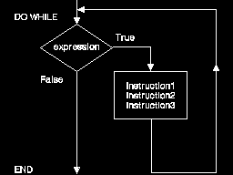
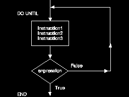

Conditional loops are run when a true or false condition is met. We will now look at some instructions used for conditional loops:
DO WHILE and DO UNTIL: The DO WHILE and DO UNTIL instructions are run while or until some condition is met. A DO WHILE loop is:
DO WHILE expression instruction1 instruction2 instruction3 END
The DO WHILE instruction tests for a true or false condition at the top of the loop; that is, before processing the instructions that follow. If the expression is true, the instructions are performed. If the expression is false, the loop ends and moves to the instruction following END.
The following diagram shows the DO WHILE instruction:
To see a procedure using a DO WHILE loop, select the Examples pushbutton.
DO UNTIL: A DO UNTIL instruction differs from the DO WHILE because it processes the body of instructions first, then evaluates the expression. If the expression is false, the instructions are repeated (a loop). If the expression is true, the procedure ends or moves to the next step outside the loop.
The DO UNTIL instruction tests at the bottom of the loop; therefore, the instructions within the DO loop are run at least once.
An example of a DO UNTIL loop follows:
DO UNTIL expression instruction1 instruction2 instruction3 END
The following diagram shows the DO UNTIL instruction:
To see a procedure that uses a DO UNTIL loop, select the Examples pushbutton.
LEAVE: You may want to end a loop before the ending conditions are met. You can accomplish this with the LEAVE instruction. This instruction ends the loop and continues processing with the instruction following END. The following procedure, LEAVE.CMD, causes the interpreter to end the loop.
/* Using the LEAVE instruction in a loop */
SAY 'enter the amount of money available'
PULL salary
spent = 0 /* Sets spent to a value of 0 */
DO UNTIL spent > salary
SAY 'Type in cost of item or END to quit'
PULL cost
IF cost = 'END'
THEN
LEAVE
spent = spent + cost
END
SAY 'Empty pockets.'
EXIT
DO FOREVER: There may be situations when you do not know how many times to repeat a loop. For example, you may want the user to type specific numeric data (numbers to add together), and have the loop perform the calculation until the user says to stop. For such a procedure, you can use the DO FOREVER instruction with the LEAVE instruction.
The following shows the simple use of a DO FOREVER ending when the user stops.
/* Using a DO FOREVER loop to add numbers */
sum = 0
DO FOREVER
SAY 'Enter number or END to quit'
PULL value
IF value = 'END'
THEN
LEAVE /* procedure quits when the user enters "end" */
sum = sum + value
END
SAY 'The sum is ' sum
EXIT